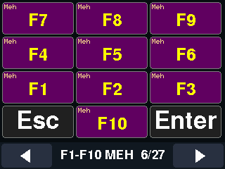
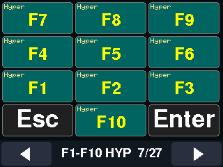
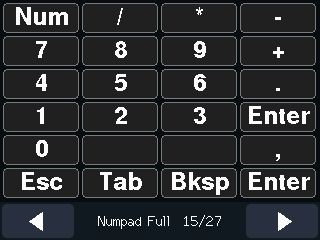
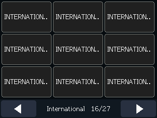
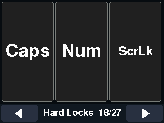

The classic interface
The classic interfaceHistory. This page belongs to the history of the project: the classic interface was an alternative to the LVGL interface and is not part of the current firmware. The screenshots and measurements date from the time when both boards showed all pages; since then the Core2 has become the presentation clicker and the CoreS3 the macro pad. The current screens are in the web demo and on the Clicker page.
27 pages in four groups. Every thumbnail links to its card.
Work and editing
Maven, Office, editing, system keys and the keys you edit with.


Function keys
F1 to F24, each in a plain, a Meh and a Hyper flavour.
 5 · F1-F10
5 · F1-F10
6 · F1-F10 MEH
7 · F1-F10 HYP 8 · F11-F20
8 · F11-F20 9 · F11-F20 MEH
9 · F11-F20 MEH 10 · F11-F20 HYP
10 · F11-F20 HYP 11 · F21-F24
11 · F21-F24 12 · F21-F24 MEH
12 · F21-F24 MEH 13 · F21-F24 HYP
13 · F21-F24 HYPTyping and layout
Symbols, the numpad, international and language keys, and the lock keys.
 14 · Symbol Pad
14 · Symbol Pad
15 · Numpad Full
16 · International 17 · Language
17 · Language
18 · Hard Locks 27 · Locks
27 · LocksMedia and applications
Media control, Teams, Outlook, PowerPoint, the browser, the debugger and app launching.